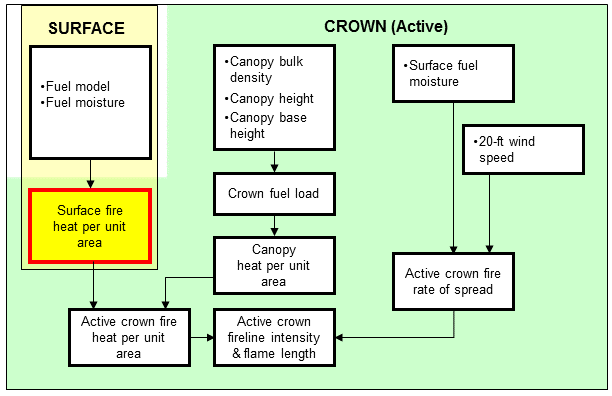
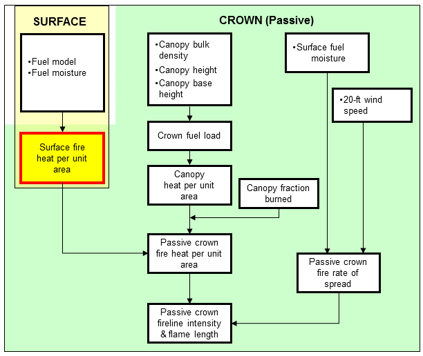

| |
Surface Fire Heat per Unit Area |
Surface fire heat per unit area is the heat energy release per area (square foot or square meter) within the flaming front of the surface fuel. It is not affected by wind, slope, or direction of spread. Surface fire heat per unit area is calculated in Rothermel's (1972) surface fire spread model and is based only on the fine fuels that are assumed to affect fire spread. Additional energy is released in the burnout phase of combustion, but that heat is not considered in this calculation. Therefore, care should be exercised when using surface fire heat per unit area to predict fire effects.
Surface fire heat per unit area is used to calculate both active and passive crown fireline intensity and crown fire flame length according to Rothermel (1991) and Scott and Reinhardt (2001). An alternative to using the heat per unit area calculated in SURFACE is to enter it directly into the CROWN module. This only works when Crown fire is calculating using Rothermel (1991) is selected. Rothermel (1991) prepared a table of calculated heat per unit area values using the Burnout model, which produces values higher than those calculated by the surface fire spread model. The heat per unit area values are available by selecting the Guide button and then Choices.
| I/O | Module | If | Notes |
| Input | CROWN | If SURFACE is not selected and if Crown fire is calculated using Rothermel (1991) is selected as an input option and if Active Crown Fireline Intensity is selected as an output variable. | |
| Output | SURFACE |
| Surface Fire Heat per Unit Area (Btu/ft2) |
Fuel Model plus 1000-h fuel |
|---|---|
| 580 | 8 |
| 760 | 2 |
| 1050 | 9 |
| 1325 | 9 + 30 ton/ac |
| 1325 | 10 |
| 1570 | 10 + 30 ton/ac |
| 3430 | 12 |
|  |
|  |